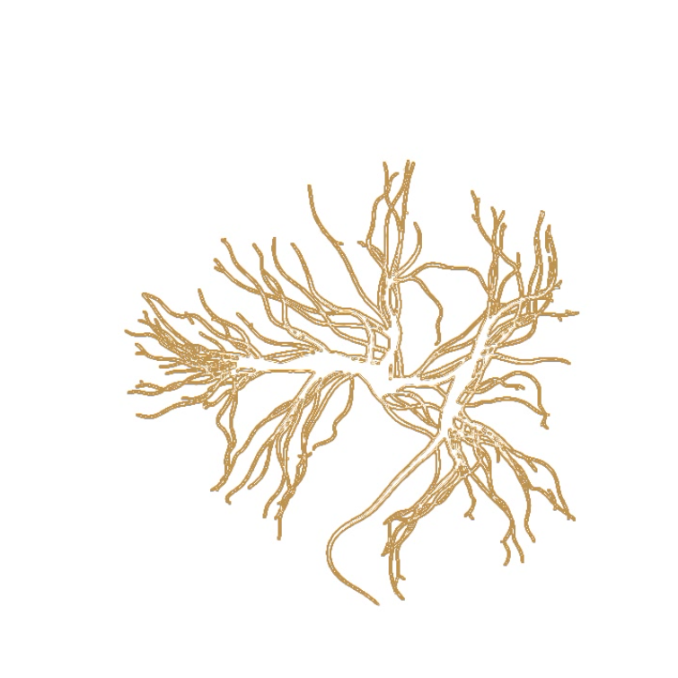
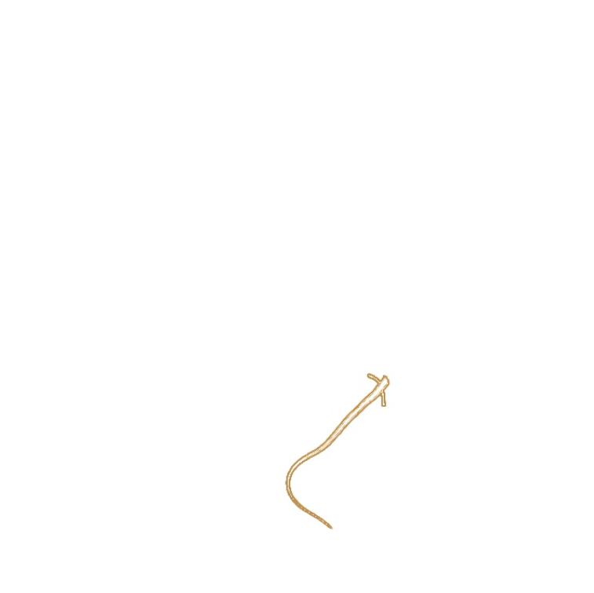
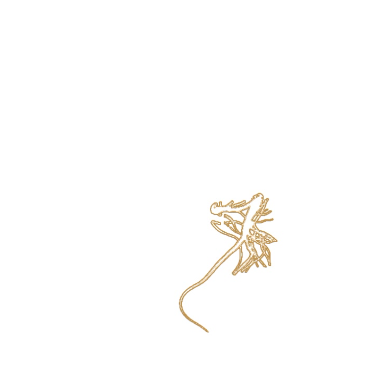
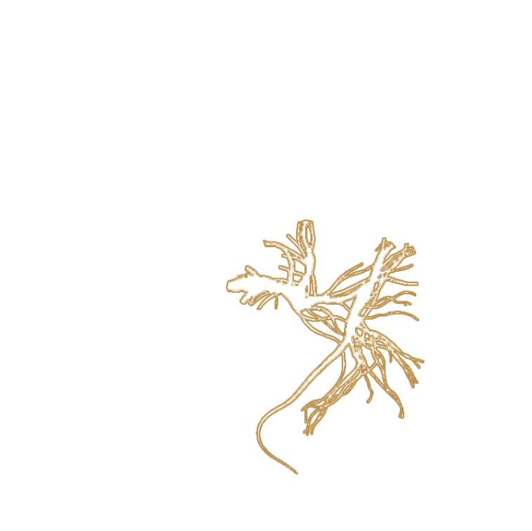

Organic Growth
Home
The work expores a simple algorithm to emulate organic growth by selectively expanding a mask of pixels based on perlin noise.
Medium: TouchDesigner

Still from organic growth - final state

Still from organic growth #1

Still from organic growth #2

Still from organic growth #3